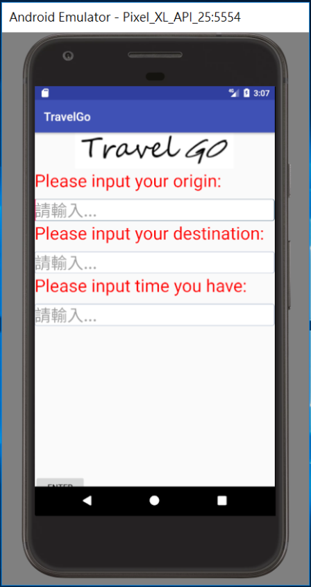

・資料深度不足 ・創意性不足：申請書未表達完全，以至於評審為了解其中之創意
・資料深度不足
・創意性不足：申請書未表達完全，以至於評審為了解其中之創意
・適切性：資料-臺北市臺北旅遊網-景點資料(未來會加上一些活動地點 之類的) ・創新性：能夠根據起終點自動規劃行程，現在APP流行趨勢為跟日常生活的結合 ・市場性：能夠配合政府推廣觀光，帶動景點周遭經濟
・適切性：資料-臺北市臺北旅遊網-景點資料(未來會加上一些活動地點 之類的)
・創新性：能夠根據起終點自動規劃行程，現在APP流行趨勢為跟日常生活的結合
・市場性：能夠配合政府推廣觀光，帶動景點周遭經濟
